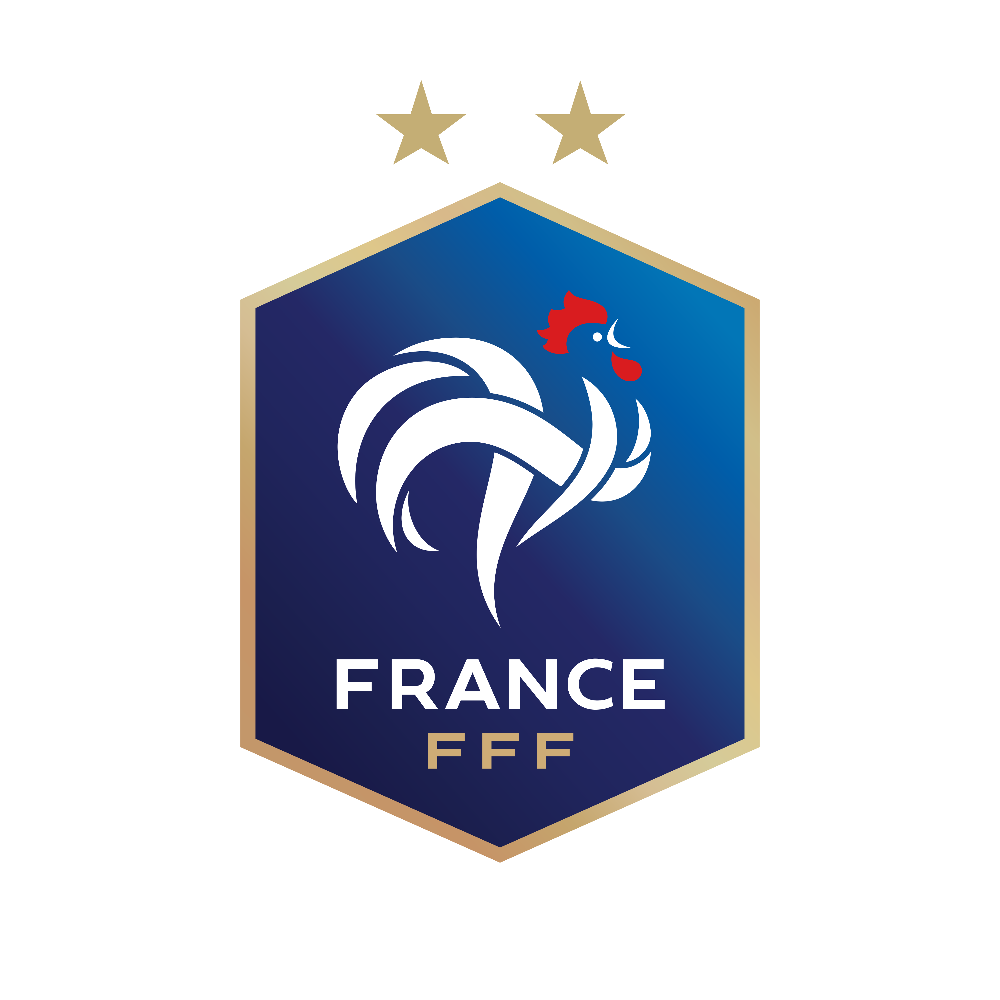
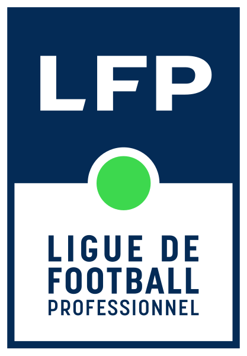
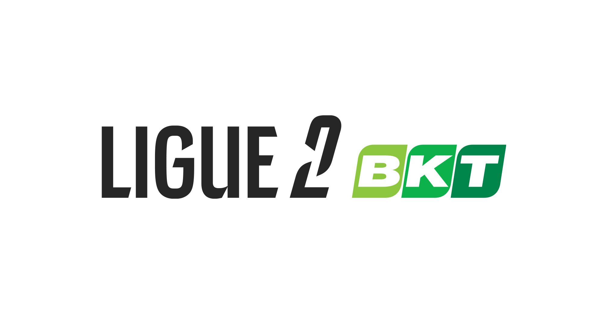

Les pré-sélections
Les Détections au numérique.fr est un site qui permet aux jeunes footballeurs de candidater à des pré-sélections, via des vidéos, pour intégrer les centres de formation des clubs professionnels de football.
Les pré-sélections sont organisées en partenariat avec la Fédération Française de Football (FFF) et la Ligue de Football Professionnel (LFP).
Les clubs professionnels de Ligue 1 et de Ligue 2 participent aux détections organisées par la FFF. Les clubs peuvent ainsi recruter de jeunes joueurs talentueux pour les intégrer à leur centre de formation.
Les clubs partenaires de notre site participent aux pré-sélections et sont donc libres d'accepter si oui ou non le candidat passe à l'étape suivante du processus.
Les pré-sélections sont ouvertes à tous les jeunes footballeurs de 13 à 18 ans. Pour participer, il suffit de partager des vidéos de tes matchs. Les vidéos seront visionnées par des recruteurs de clubs professionnels qui pourront te proposer de participer à des détections.
Les détections sont organisées dans toute la France et permettent aux jeunes talents de se faire repérer par les clubs professionnels. C'est une étape cruciale pour les jeunes footballeurs qui rêvent de devenir professionnels.
Les détections, c'est l'occasion pour les candidats de montrer leurs qualités et de se faire repérer par les clubs professionnels.
Parlons maintenant des vidéos qui doivent être partagées :
Elles doivent être de bonne qualité.
Le top serait de partager deux ou trois vidéos de cinq à dix minutes chacune.
Evidemment, fais en sorte de montrer tes plus belles actions en rapport à ton poste et au rôle que tu joues dans la composition.
-

La Fédération Française de Football organise des détections pour les jeunes footballeurs de 13 à 18 ans. Les détections sont organisées dans toute la France et permettent aux jeunes talents de se faire repérer par les clubs professionnels.
-

La Ligue de Football Professionnel (LFP) joue un rôle d'intermédiaire crucial en facilitant les échanges entre les jeunes talents et les clubs professionnels. Elle organise des événements de détection et met en relation les recruteurs avec les joueurs prometteurs, assurant ainsi un processus de sélection transparent et efficace.
-

Les clubs partenaires de notre site participent aux pré-sélections et sont donc libres d'accepter si oui ou non le candidat passe à l'étape suivante du processus et ainsi intégrer les plus talentueux à leur centre de formation.